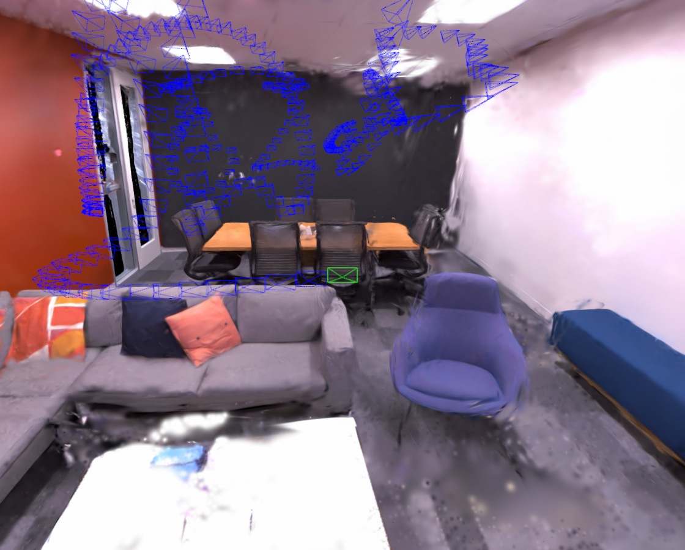
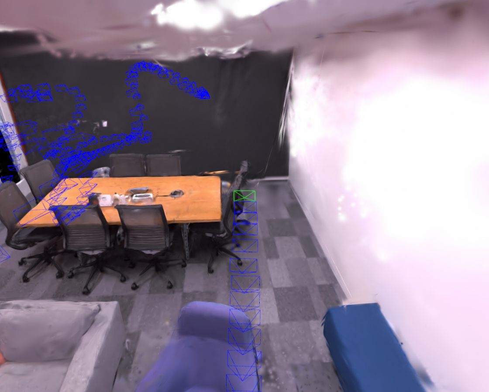
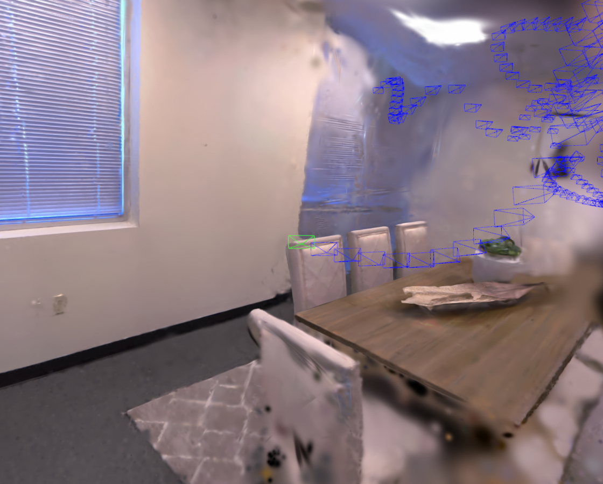
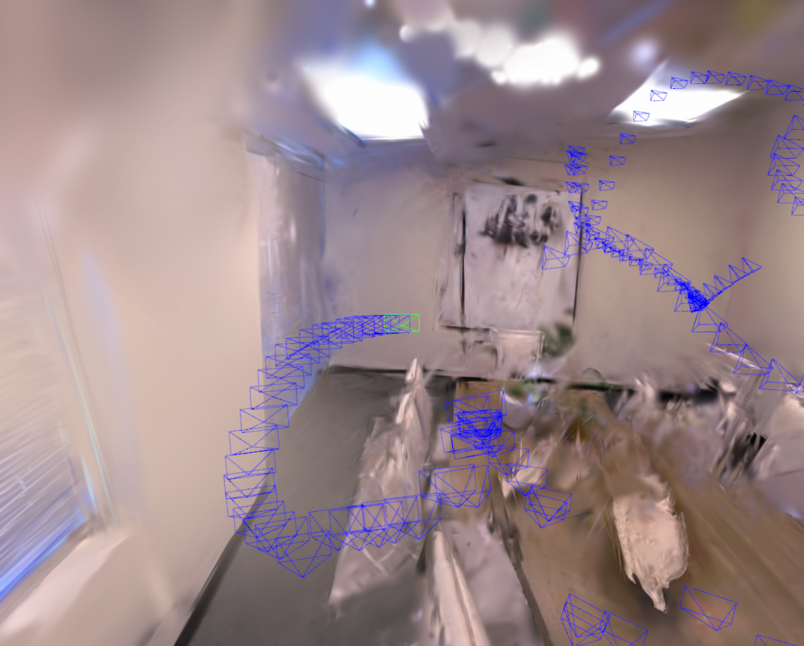

fixed-zoom GS-SLAM
Our self-calibration approach allow focal length adjustment in SLAM, which significantly enhances the quality of visual information and ultimately outperforms conventional fixed-zoom systems.




We present a multi-view camera self-calibration technique built on 3D Gaussian splatting (3DGS). Our method is based on the observation that after projecting/splatting 3D Gaussian ellipsoids onto the 2D imaging plane, both the focal length and the radial distortion impact the position and shape of the splatted 2D Gaussian ellipses, and thus the rendered image after rasterization. The entire process is differentiable. We implement our method in a CUDA kernel with hard-coded analytical Jacobians for gradient backpropagation. This allows us to optimize self-supervised costs derived from multi-view constraints to infer calibration parameters. Our method is both correspondence-free and training-free, demonstrated with structure-from-motion and visual SLAM applications.
fixed-zoom GS-SLAM
varying zoom GS-SLAM
fixed-zoom GS-SLAM
varying zoom GS-SLAM
@article{
author = {Fang Bai, Xinyi Mia Li, Keyu Chen, Adrien Bartoli},
title = {Camera self-calibration from Gaussian splatting},
year = {2025},
}